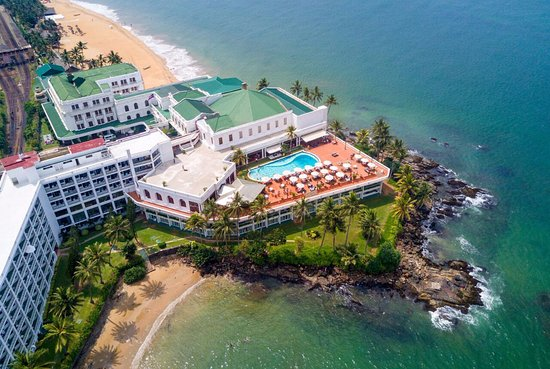
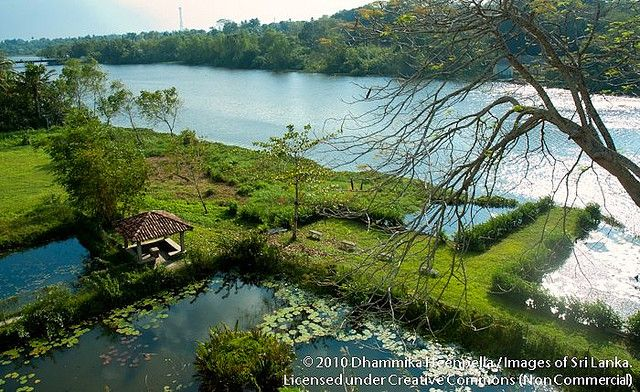
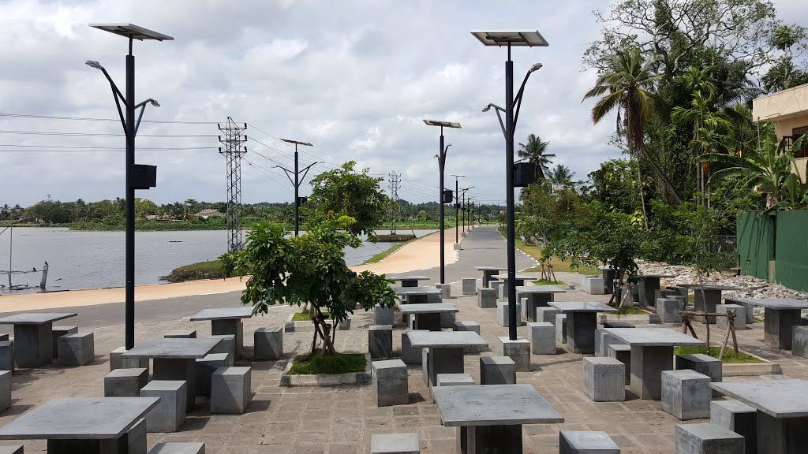

Mount Lavinia
is a suburb in Colombo, Sri Lanka located within the administrative boundaries of the Dehiwala-Mount Lavinia municipal limits.
The area is a mostly residential suburb, known as Colombo's beach retreat it is famed for its "Golden Mile" of beaches and has long been a hot spot for tourism and nightlife. It is one of the most liberal regions
in Sri Lanka and plays host to the island's annual Gay Pride and Rainbow Kite Festival since 2005
The area's name arose when the second Governor of Ceylon, Sir Thomas Maitland, acquired land at "Galkissa" (Mount Lavinia) and decided in 1806 to construct a personal residence there. Maitland fell in love with Lovina Aponsuwa, a local mestiço dancer, and continued a romantic affair with her until he was recalled to England in 1811. The Governor's mansion, which he named "Mount Lavinia House" is now the Mount Lavinia Hotel and the village that surrounded the building has subsequently developed into a bustling area,
taking its name from the Governor's mistress, Lovina.
There are other explanations rooted in geography and the natural surroundings, when it comes to the origin of the name Mount Lavinia. The Sinhalese who lived on the coastal belt had named the promontory "Lihiniya Kanda" or "Lihiniyagala" meaning the hill of the sea gull or the rock of the sea gull.
The local name for the town today is Galkissa - Kissa being a somewhat obsolete Sinhala word for rock.
The town came into official recognition when Governor Maitland used the postal address Mt. Lavinia, Ceylon, in 1805, while writing to the British Secretary of State, Lord Castlereagh.
Bolgoda Lake
Bolgoda Lake is situated in the South West of Sri Lanka, 19 kilometres from Colombo. The lake consists of two major water bodies and covers 374 square kilometres partly fresh and brackish water. It is one of the biggest sources of fresh water within the western district of Sri Lanka. Its natural beauty has great potential in an area bordering on Colombo for development, tourism and fisheries, but it is gravely threatened by industrial pollution.
With industrial chemicals, effluents from the hotel industry, pollution from saw mills, destruction of wetlands and mangrove swamps been some of the worst problems faced by the area. This pollution has directly affected the surrounding drinking water and led to the growth of the weed Diya Habala which is slowly asphyxiating the lake´s fauna and flora.
As a consequence of this situation, EMACE has decided to take a double approach to the problem. The first approach involves a conservation project seeking to clean up the lake and develop an interest in local inhabitants via economic incentives to protect the lake from further pollution. Secondly EMACE aims to develop an industry with a local or foreign business to transform the sawdust into energy reducing the negative impacts of the mills on the lake.
EMACE is an acronym for Environment & Science, Manpower & Skills, Adult & Parenthood Development Assistance, Childcare & Women’s rights, Education & Culture. Goals of this organisation are:


Bellanwila Park
Boralesgamuwa is a city on the Colombo-Horana Road about 14 km (9 mi) south-east of the commercial capital Colombo. The Boralesgamuwa junction was formerly known as Nagass Handiya.
One of Sri Lanka's largest kaolin deposits is in Boralesgamuwa. The Bellanwila Rajamaha Viharaya is very close to the Boralesgamuwa.
The post code of Boralesgamuwa is 10290.
Nearby places
General Sir John Kotelawala Defence University Hospital
Boralesgamuwa Wawa is a lake along the Maharagama–Boralesgamuwa Road.
Attidiya Bird Sanctuary is the natural sanctuary closest to Colombo.